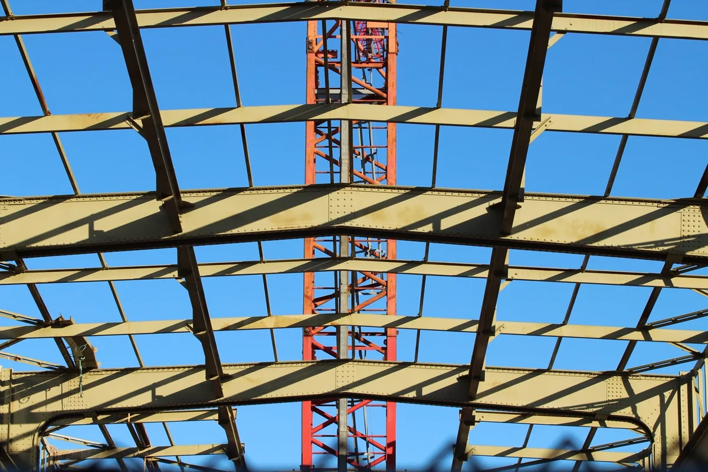
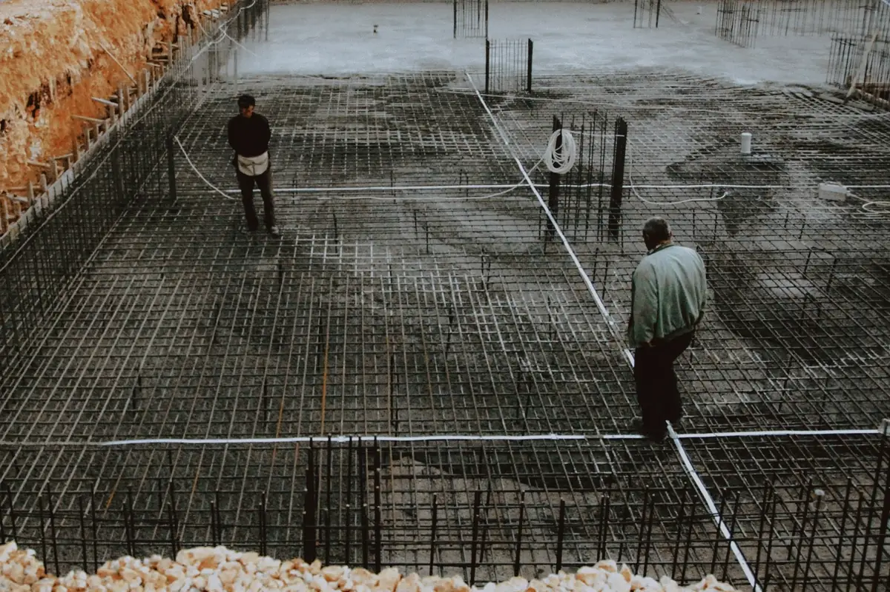

Projeto estrutural é onde o custo da obra é decidido
A estrutura costuma responder por uma fatia grande do orçamento de uma obra industrial ou comercial, e é a parte mais cara de corrigir depois. Uma concepção bem feita — vão, malha de pilares, tipo de laje, sistema de contraventamento — muda o consumo de aço e de concreto antes de qualquer negociação de preço com fornecedor.
Trabalhamos com estrutura metálica, concreto armado, concreto protendido e fundações, tanto em obra nova quanto em verificação e reforço de estrutura que já existe. Toda entrega sai com memória de cálculo conferível e ART registrada no CREA-ES.
Escopos de projeto
Projeto de estrutura metálica
Galpões, coberturas, mezaninos, passarelas, pipe racks e estruturas de apoio de equipamento. Dimensionamento conforme a NBR 8800 (perfis laminados e soldados) e a NBR 14762 (perfis formados a frio), com detalhamento de ligações parafusadas e soldadas, contraventamento e chumbadores. Quem executa a montagem encontra o passo seguinte em montagem industrial.
Projeto de concreto armado
Pilares, vigas, lajes, escadas, reservatórios, muros de arrimo e blocos de fundação conforme a NBR 6118. Detalhamento de armação com lista de ferro quantificada, o que evita perda em obra e discussão com o ferreiro. Cobrimento e classe de agressividade ambiental definidos com atenção ao ambiente marinho da orla capixaba.
Projeto de concreto protendido
Indicado quando o vão livre é grande e a altura disponível é pequena: lajes de estacionamento, pisos industriais, vigas de transição e reservatórios. A protensão reduz altura de viga, reduz fissuração e permite estacionamento sem floresta de pilares — o que costuma pagar o custo adicional em área útil ganha.
Projeto de fundação
Sapatas, blocos sobre estacas, radier, estaca hélice contínua, estaca escavada e estaca metálica, a partir da sondagem SPT e da geometria de cargas da superestrutura. Também fazemos a análise de interação solo-estrutura quando há carga concentrada alta ou vizinhança sensível.
Verificação e reforço de estrutura existente
Levantamento cadastral em campo, medição das seções reais, avaliação do estado de conservação e recálculo com o novo carregamento. É o serviço pedido antes de instalar ponte rolante, criar mezanino, trocar telha por painel mais pesado ou colocar equipamento novo em laje. Quando o problema já é deterioração, e não carga, o caminho é patologias e corrosão estrutural.

Como conduzimos o projeto
Concepção
Definição do sistema estrutural, malha de pilares e vãos junto com a arquitetura, comparando alternativas por consumo de material e prazo de execução.
Análise e cálculo
Modelagem, combinações de carregamento conforme a NBR 8681, verificação de estados-limite último e de serviço, flechas e vibração.
Detalhamento
Pranchas de forma, armação, montagem e ligações, com lista de materiais quantificada e especificação técnica de aço, concreto, solda e parafuso.
Entrega e acompanhamento
Emissão com ART, esclarecimento técnico durante a execução e visitas de acompanhamento quando o contrato prevê.
Escolha do sistema estrutural
| Critério | Estrutura metálica | Concreto armado |
|---|---|---|
| Vão livre grande | Vantagem clara | Exige viga alta ou protensão |
| Prazo de obra | Fabricação em paralelo à fundação | Depende de cura e desforma |
| Peso na fundação | Bem menor | Maior, encarece a fundação em solo mole |
| Ampliação futura | Simples de ligar novo trecho | Mais trabalhosa |
| Ambiente de maresia | Exige esquema de pintura robusto e manutenção | Exige cobrimento e classe de agressividade adequados |
| Resistência ao fogo | Precisa de proteção passiva | Resistência intrínseca maior |
| Canteiro apertado | Menos entulho e menos área de apoio | Precisa de área para forma e armação |

Normas que orientam nossos projetos
- NBR 6118 — projeto de estruturas de concreto;
- NBR 8800 — estruturas de aço e mistas de aço e concreto;
- NBR 14762 — estruturas de aço constituídas por perfis formados a frio;
- NBR 6120 — ações para o cálculo de estruturas de edificações;
- NBR 6123 — forças devidas ao vento, decisiva em galpão e cobertura leve no litoral;
- NBR 8681 — ações e segurança nas estruturas;
- NBR 6122 — projeto e execução de fundações;
- NBR 15575 — desempenho de edificações habitacionais, quando aplicável.
Erros de projeto que aparecem só na obra
| Erro | O que acontece |
|---|---|
| Vento subestimado em galpão litorâneo | Arrancamento de telha e deformação de terça na primeira frente forte |
| Ligação sem detalhamento de nó | Montador improvisa em campo e a ligação vira o ponto fraco da estrutura |
| Fundação projetada sem sondagem | Recalque diferencial, trinca em alvenaria e reforço caro depois |
| Cobrimento de armadura insuficiente perto do mar | Corrosão de armadura e destacamento de concreto em poucos anos |
| Flecha verificada só no estado-limite último | Laje passa no cálculo de ruptura mas visivelmente deforma e trinca revestimento |
| Carga de equipamento não informada ao calculista | Laje ou viga insuficiente exatamente onde a máquina será instalada |
Perguntas frequentes sobre projeto estrutural
Estrutura metálica ou concreto armado: qual sai mais barato?
Depende do vão, do prazo e do que vai acontecer depois. Estrutura metálica costuma vencer em vão livre grande, obra rápida e edificação que ainda vai crescer, porque a fabricação corre em paralelo à fundação e a ampliação futura é simples. Concreto armado costuma vencer em pé-direito baixo, geometria irregular, exigência de resistência ao fogo sem revestimento adicional e ambiente muito agressivo. Em Vitória e Vila Velha entra ainda a maresia, que encarece a proteção anticorrosiva da metálica e precisa ser considerada no custo de ciclo de vida, não só no custo inicial.
O que entra em um projeto estrutural completo?
Memorial descritivo, memória de cálculo com os carregamentos adotados e as verificações feitas, plantas de forma e de armação (ou de montagem e ligações, no caso da metálica), detalhamento de nós e apoios, lista de materiais quantificada, especificação técnica dos materiais e a ART registrada. Projeto entregue só como desenho, sem memória de cálculo, não permite conferência por terceiros e costuma travar em análise de prefeitura ou de cliente corporativo.
Preciso de sondagem antes do projeto de fundação?
Sim. Sem sondagem SPT o projetista trabalha por estimativa, e a diferença entre supor e conhecer o perfil do solo é a diferença entre uma sapata e uma estaca de vinte metros. A sondagem é barata perto do custo de uma fundação superdimensionada — ou do custo, muito maior, de um recalque que aparece com a obra pronta. Na região litorânea da Grande Vitória, com solos moles e nível de água alto, ela é indispensável.
Dá para aumentar a carga de um galpão que já existe?
Muitas vezes sim, mas nunca por suposição. O caminho é levantar a estrutura existente em campo, medir as seções reais, verificar o estado de corrosão e das ligações, refazer o cálculo com o novo carregamento e então dizer o que a estrutura suporta. Quando não suporta, o projeto de reforço aponta a solução: chapa de reforço, contraventamento adicional, pilar intermediário, protensão externa ou substituição pontual de peça.
Quanto tempo leva um projeto estrutural?
Um galpão simples de porte médio leva de duas a quatro semanas entre concepção, cálculo e detalhamento, contadas a partir do momento em que o projeto de arquitetura está congelado e a sondagem entregue. Estrutura com ponte rolante, mezanino, pavimento múltiplo ou protensão passa disso. O que mais atrasa projeto estrutural é mudança de arquitetura durante o cálculo.
Projeto estrutural na Grande Vitória
Cálculo e detalhamento para obras industriais, comerciais e institucionais na região:
Tem uma obra para calcular?
Mande a arquitetura, a área e o uso pretendido. Retornamos com escopo, prazo e valor do projeto.